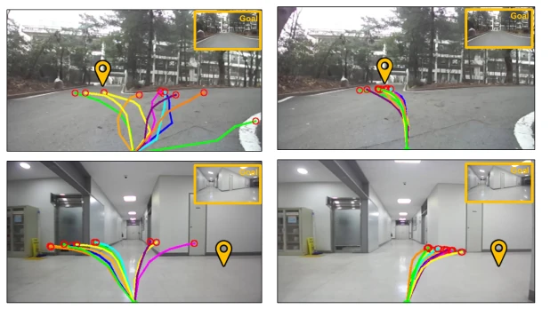
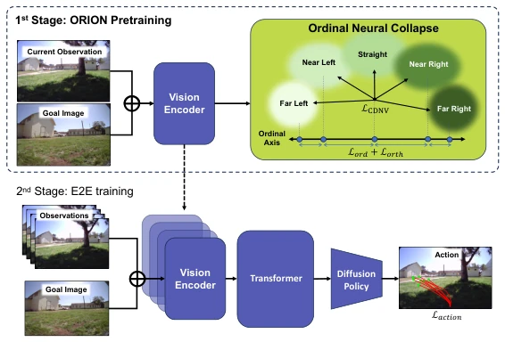
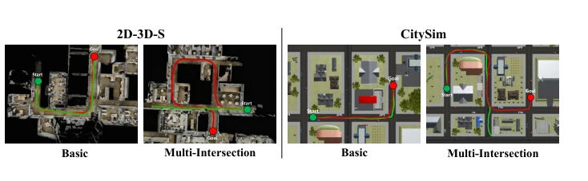
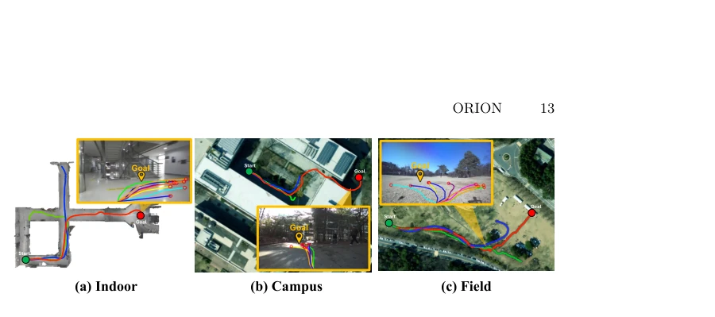
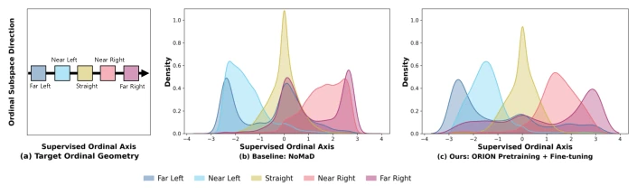

这篇论文给视觉导航的“黑盒”编码器加了个“秩序”的紧箍咒。作者发现端到端训练让编码器学到的是“动作无关”的模糊特征，尤其在路口容易迷路。ORION 利用序数神经坍缩（ONC）强行把特征空间排成一列，让“左”和“右”在几何上有序。虽然听起来很性感，但本质上还是两阶段预训练套壳，Stage 2 微调后结构还能保留多少存疑。实验在复杂路口确实稳了，Heading Jerk 降得漂亮，但现实世界表现提升有限，可能只是把“抖动”变成了“犹豫”。对于追求 SOTA 的团队是个不错的 baseline 优化，但别指望它能解决长程规划的根本问题。
This paper imposes an 'order' constraint on the 'black box' encoder of visual navigation. The authors found that end-to-end training causes the encoder to learn 'action-agnostic' fuzzy features, making it prone to getting lost at intersections. ORION utilizes Ordinal Neural Collapse (ONC) to forcibly arrange the feature space into a sequence, ensuring 'left' and 'right' are geometrically ordered. Although it sounds appealing, essentially it is still a two-stage pre-training wrapper, and how much structure remains after Stage 2 fine-tuning is questionable. Experiments proved stable at complex intersections, with Heading Jerk reduced significantly, but real-world performance improvement is limited, possibly just turning 'jitter' into 'hesitation'. For teams pursuing SOTA, it is a good baseline optimization, but do not expect it to solve the fundamental problem of long-horizon planning.
研究动机Motivation
视觉导航的核心痛点在于端到端训练时，编码器仅通过动作损失间接监督，导致学到的是视觉显著但任务无关的特征 [28,34]。尤其在多路口等模糊场景，策略输出不一致。现有工作尝试结构化表示，如 Qi et al. [23] 提出的 REPO 基于 Simplex ETF 几何，但这假设类别间均匀分离，忽略了导航动作天然的序数关系（近左与远左相似，远左与远右差异大）。Ma et al. [17] 指出序数回归应坍缩到一维子空间，但未被用于导航。本文旨在填补这一几何结构缺失，通过显式组织特征空间提升决策一致性。
The core pain point of visual navigation lies in that during end-to-end training, the encoder is only indirectly supervised via action loss, resulting in learning visually salient but task-agnostic features [28,34]. Especially in ambiguous scenes like multi-intersections, policy outputs are inconsistent. Existing work attempts structured representation, such as REPO proposed by Qi et al. [23] based on Simplex ETF geometry, but this assumes uniform separation between classes, ignoring the natural ordinal relationship of navigation actions (near-left is similar to far-left, far-left differs greatly from far-right). Ma et al. [17] point out that ordinal regression should collapse to a one-dimensional subspace, but it has not been used in navigation. This paper aims to fill this geometric structure gap, improving decision consistency by explicitly organizing the feature space.

Fig. 1: Structured representations improve action consistency at intersec- tions. Given the same goal image, (a) the NoMaD baseline generates candidate way- points scattered across multiple directions, while (b) our method concentrates them toward the goal direction. Each colored trajectory represents one candidate sampled from the action decoder.
Overall adopts two-stage training: Stage 1 pre-trains encoder, Stage 2 end-to-end fine-tuning. The core innovation is the Ordinal Neural Collapse (ONC) loss function. First, continuous actions are discretized into ordered classes based on target relative angles (e.g., Far Left to Far Right). The loss comprises three parts: 1) CDNV promotes intra-class compactness and inter-class separation; 2) Supervised Ordinal Projection forces class means to align along the learned 1D axis, consistent with ordinal theory; 3) Orthogonal Compactness suppresses off-axis variance. After pre-training, the encoder is integrated into the NoMaD framework (Vision Encoder + Transformer + Diffusion Decoder) for joint fine-tuning. This method does not limit encoder capacity, only provides structured initialization, avoiding gradient conflicts during joint training.

Fig. 2: Overall Pipeline of the Proposed Method. Given the current observa- tion and a goal image, the vision encoder extracts latent features whose geometry is structured by Ordinal Neural Collapse objectives (Stage 1). In Stage 2, the model is fine-tuned end-to-end to align representation geometry with control semantics.
Evaluated on 2D-3D-S and Citysim simulations and real-world (indoor, campus, outdoor). Baselines include ViNT, NoMaD, and NC-ETF. Metrics cover Success Rate (SR), Progress (Prog), Collision, and Heading Jerk (H-Jerk). In simulation, ORION improved SR by 26pp in Multi-Intersection task, H-Jerk reduced by 71%. Real-world also better than baselines, especially in visually repetitive corridors. Ablation studies show that using only direction supervision (CE-only) is actually harmful, proving the key importance of ONC geometric structure. Two-stage training outperforms joint training (NC-Joint failed), confirming pre-trained structure is retained during fine-tuning.

Fig. 3: Qualitative comparison in simulation. Green and red dots denote the start and goal positions, respectively. Trajectories are color-coded as NoMaD (green) and ORION (red).

Fig. 4: Real-world Qualitative Results. Green and red dots denote start and goal positions, respectively. Trajectories are color-coded as ViNT (blue), NoMaD (green), and ORION (red). The orange frames show example ego images and their corresponding sampled paths in each trajectory.

Fig. 5: Class distributions on the supervised ordinal axis after Stage 2 fine- tuning. (a) Target ordinal geometry. (b) NoMaD: Far and Near classes nearly overlap at both extremes. (c) ORION: all five classes maintain distinct modes. Projections are normalized to zero mean and unit variance. Distributions are computed on the held-out RECON [25] test split using Gaussian kernel density estimation (bandwidth h = 0.15). Residual overlap near boundaries reflects bin-boundary ambiguity, where visually similar samples across an angular bin boundary receive different labels.